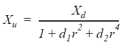

通常，您不需要设置 镜头 上的参数 输出 Tab，就像 CameraTracker 为你做的那样，但是了解一些 CameraTracker 用来解释镜头失真的方程可能会有所帮助。根据检测到的镜头类型，有两种模式:
• 球形 -补偿不同的球面镜片。这是两个镜头校正中较简单的一个，使用以下公式:

在失真中心的标准化坐标中, 徐 和 Xd 分别等于未扭曲板和扭曲板中的同一点。
D1 等于径向失真 1。
D2 等于径向失真 2。
R2 等于该点与变形中心的距离。
R4 等于 r2 的平方。
• 变形 -补偿变形镜头。变形校正使用三个附加参数 ( Ax , Ay ,和 Asq ) 并需要两个方程，因为与球面透镜不同，平行于 x轴的失真量与平行于 y轴的失真量不同。
在失真中心的标准化坐标中，( 徐 , 余 ) 和 ( Xd , Yd ) 分别等于未扭曲板和扭曲板中的同一点。
d1 is equal to Radial Distortion 1.
d2 is equal to Radial Distortion 2.
r2 is equal to the distance of the point from the Distortion Center.
r4 is equal to the square of r2.
Ax 等于不对称失真 X。
Ay 等于不对称失真 Y。
Asq 等于变形挤压。
|
|